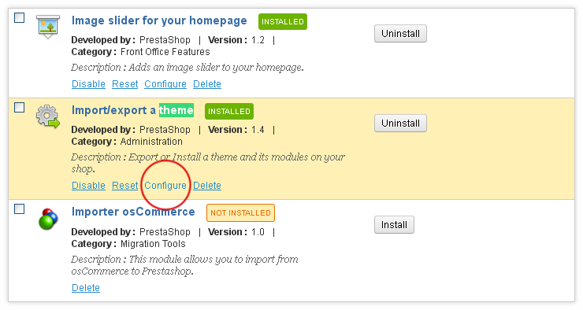

Preparations
PrestaShop e-commerce engine requires MySQL database to store data. Before you proceed with the PrestaShop installation please make sure you've already created the MySQL database. This can be done with your hosting control panel or phpMyAdmin tool.
Please check the detailed tutorial on how to create MySQL database. In case of any issues please contact your hosting provider for further assistance.
During the MySQL database creation procedure you'll get the database details like: database name, username, password and database server. Remember these details as you'll need them for PrestaShop installation.
PrestaShop engine installation
1. Server requirements
Please make sure your hosting server meets PrestaShop requirements:
- System: Unix, Linux or Windows. Unix is highly recommended.
- Web server: Apache Web server 1.3 or later, Microsoft's IIS Web server 6.0 or later, and nginx 1.0 or later.
- PHP 5.2* or later.
- MySQL 5.0 or later.
- At least 32 Mb of RAM on your server (64 Mb is comfy, the more the better).
* PrestaShop can work with PHP 5.1 or later, but versions inferior to 5.2 have bugs that might prevent some functions to work as expected (such as invalid date timezone).
2. Downloading
To install PrestaShop you need to download PrestaShop engine package from the official website at www.prestashop.com/en/downloads
Into the Download box input your name and e-mail and click 'Download' button.
Please make sure your version of PrestaShop engine matches the template requirements. All versions of PrestaShop are available at SourceForge
3. Extracting Files
When you are done with the download you need to extract the files from the PrestaShop engine package.
This can be done with any archive manager like WinZip(PC), StuffitExpander(MAC) etc.
Please check the following tutorials on how to extract files from the archives with WinZip(PC) and StuffitExpander(MAC).
Please note: if your hosting control panel has the option to 'Extract' files you can use it and extract the files directly on your server after upload.
4. Uploading PrestaShop engine files
In case you extracted the files locally on your computer you need to upload them to your hosting server.
This can be done using the hosting control panel File Manager or with some third party FTP Manager applications like FileZilla, TotalCommander, CureFTP etc.
You can check the detailed video tutorial on how to upload files to server using FTP manager and how to upload files to a server using cPanel (WebHost Manager, WHM).
5. PrestaShop engine installation
When you are done with the files upload you can start the PrestaShop engine installation. Open your browser and in the address bar type your 'domain name/path to your PrestaShop directory'. You should see the welcome screen. Please follow the instructions below to install PrestaShop.
Step 1: Welcome
Please select the installation language and check the license agreement.
Please note: the installation language option won't affect your store language. By default PrestaShop is offered in English. You can install additional localization packages to change the store language.
When you are done click 'Next' button.
Step 2: System Compatibility
Check the PHP settings and directory permissions. In case of an errors please contact your hosting provider for further assistance.
If everything is correct please click 'Next' button.
Step 3: Database configuration
As you already have a MySQL database created please input database details into the appropriate fields below.
In any case you can get the database details from your hosting control panel or contacting hosting provider.
When you are done click 'Next' button.
Step 4: Shop configuration
On this step you need to input the store settings like: Shop name, activity, country, timezone, upload your logo etc.
All these settings can be changed later in PrestaShop administration panel.
Step 5: Installation is complete
This is the final step of PrestaShop installation procedure.
For security reasons you need to delete the /install/ directory and rename the /admin/ directory on your hosting server.
You can enter PrestaShop admin panel using the following address: http://your_domain_name/your_admin_folder_name/.
In case of any difficulties you can check the official PrestaShop installation manual.
PrestaShop Template installation
1. Template installation, using 'themeinstallator' module
1. Template preparation.
- Open template package.
- Copy ZIP-file with the template from /themeinstaller/ directory to your hard drive
2. Installation.
Open PrestaShop admin panel, go to Modules->Modules menu. At this page please open Administration section. Here you will see list of the available modules. Find module 'Import/export a theme v1.4' and click Configure.
Choose Browse button to find the archive with the template:
On the next page you will see information about the template, you are installing. Click Next.
After these steps, you’ll see a notification about successful template installation and menu with the module settings. Click Next.
At the last step you will see information about the modifications, performed by the module during installation. Click Finish.
2. Installing template without sample products
This installation method will suit you in case you are planing to change the store theme. This method won't harm your existing files or products database.
1. Uploading files and theme activation
Before you proceed please make sure you already downloaded the template and extracted the files from the template package. You can check detailed tutorials on how to extract the files from the template package with WinZip and StuffitExpander.
When the files are extracted you can proceed with the template upload.
- Open the template folder.
- Then go to /theme/ folder.
- Upload /img/, /modules/ and /themes/ folders to PrestaShop root directory.
- When the upload is complete open PrestaShop admin panel.
- From the top menu select Preferences > Themes.
- Select your template in the Themes section and click Save button.
Your new theme should be active now. Now you need to configure the modules.
2. Install and configure modules
Each template is provided with some specific modules settings. To make the modules appear as at the template preview you need to configure them. All modules can be configured in PrestaShop admin panel.
1. In PrestaShop admin panel from the top menu select Modules > Modules.
At the Modules page you can see the list of available PrestaShop modules. You may need to install some of them.
To install the module locate it in the list and click 'Install' button:

If installation has been done correctly you'll see the following message:
Using the module links you can activate modules (Enable|Disable links), reset settings to default (Reset link), delete module (Delete link) or configure them (Configure link).

2. After activating all necessary modules you need to assign them to correct positions.
In PrestaShop admin panel from the top menu select Modules > Positions. To place module in the required position just drag it to the position section of the modules list.
List of modules used in the theme is available in the table below:
| Module name | Position | Order |
|---|---|---|
| Language block v1.1 | Top of pages | 1 |
| Currency block v0.1 | Top of pages | 2 |
| User info block v0.1 | Top of pages | 3 |
| TM Cart block v1.2 | Top of pages | 4 |
| TM links block v0.1 | Top of pages | 5 |
| Top horizontal menu v1.5 | Top of pages | 6 |
| Camera Slideshow v1.0 | Top of pages | 7 |
| TM Banner Block v1.0 | Top of pages | 8 |
| TM Quick Search block v1.2 | Top of pages | 9 |
| TM Featured Products on the homepage v0.9 | Homepage content | 1 |
| Layered navigation block v1.8 | Right column blocks | 1 |
| Specials block v0.8 | Right column blocks | 2 |
| Viewed products block v0.9 | Right column blocks | 3 |
| Top seller block v1.1 | Right column blocks | 4 |
| Manufacturers block v1.0 | Right column blocks | 5 |
| Newsletter block v1.4 | Right column blocks | 6 |
| Tags block v1.1 | Right column blocks | 7 |
| CMS Block v1.1 | Footer | 1 |
| My Account block on footer v1.2 | Footer | 2 |
| Block social v1.0 | Footer | 3 |
| Block contact infos v1.0 | Footer | 4 |
3. Configuring images
In PrestaShop you can use predefined image dimensions for product images, category images, manufacturers etc.
For example: images of the 'home' dimensions are usually used for the category listing product images. 'large' for main product image on the product info page.
To configure product image dimensions open PrestaShop admin panel, go to Preferences > Images and set the image dimensions as displayed below:
| Picture | Width (px) | Height (px) |
|---|---|---|
| small | 71 | 91 |
| medium | 71 | 91 |
| large | 304 | 388 |
| thickbox | 600 | 766 |
| category | 500 | 150 |
| home | 228 | 291 |
| large_scene | 520 | 189 |
| thumb_scene | 161 | 58 |
| small-cart | 71 | 91 |
| home-list | 210 | 268 |
| larg-mini | 95 | 121 |
| brand | 80 | 80 |
| zoom | 600 | 766 |
| carusel | 145 | 186 |
In some cases after image dimensions changes you need regenerate images. This can be done using the Regenerate thumbnails section.
3. Template installation with sample data
Installing Sample data you'll get your PrestaShop store appear as on the template preview page. It will contain all sample products, store settings, modules settings etc.
Do not use sample data if you have a running website as it will replace all your store products and store settings.
1. Uploading template files
To upload template to your server
- Open the template folder
- Then go to /theme/ folder
- Upload /img/, /modules/ and /themes/ folders to PrestaShop root directory
2. Installing Sample data
Sample data is provided as an .SQL file. It is located in the template package /sources/ folder and is usually called dump.sql
Dump.sql file can be installed using the phpMyAdmin tool or database management tool in your hosting control panel. This detailed tutorial on how to install SQL files can help you.
Before you proceed please backup your database.
Please make sure your version of PrestaShop engine matches the template requirements. Otherwise the database can be damaged.
When you are done with the dump.sql file installation you need to activate the template.
From the PrestaShop admin panel select Preferences > Themes, choose your template in the Themes sections and click Save.
4. Installing template over existing store
This installation method will suit you in case you have a running PrestaShop website and just want to install new template.
1. Uploading template files and theme activation
- Open the template folder.
- Then go to /theme/ folder.
- Upload /modules/ and /themes/ folders to PrestaShop root directory.
- Open /img/ folder from the template package and upload logo.jpg, favicon.ico files to the /img/ folder of your PrestaShop installation
- From the PrestaShop admin panel select Preferences > Themes, choose your template in the Themes sections and click Save.
2. Modules installation
Open PrestaShop admin panel and configure modules as displayed above.
Do not use sample data if you have a running website as it will replace all your store products and store settings.
Basic tutorials
1. How to change store name
In order to change store title please open PrestaShop admin panel and go to Preferences > Store Contacts, section Contact details.
In the Shop name field type your store name and click Save button to save your changes.
2. How to edit header links
Please check the detailed tutorial on how to edit header links.
3. How to edit banners
To edit banners in PrestaShop, open the banners module in the Modules page in your store admin panel. Check section Advertising & Marketing block. When you located your banners module click the Configure button.
At the module settings page select the image that you want to use as a banner. Input the banner image link and title. Then click the validate button.
4. How to edit slider
To edit the slider images locate the Camera Slideshow module (in case you have Responsive PrestaShop template) or TM Nivo Slider (in case you have regular PrestaShop template) at the Modules page of your PrestaShop store. It is located in the Front Office Features modules section. Click the Configure button to edit the module.
At the module settings page you can change slider options (such as width, height, speed, etc.) and edit slides (slide images, URLs, descriptions, etc.).